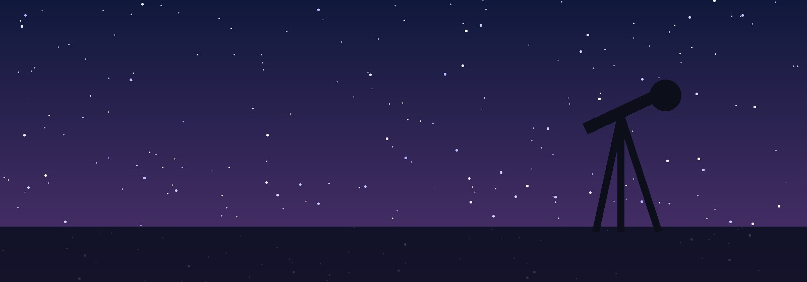
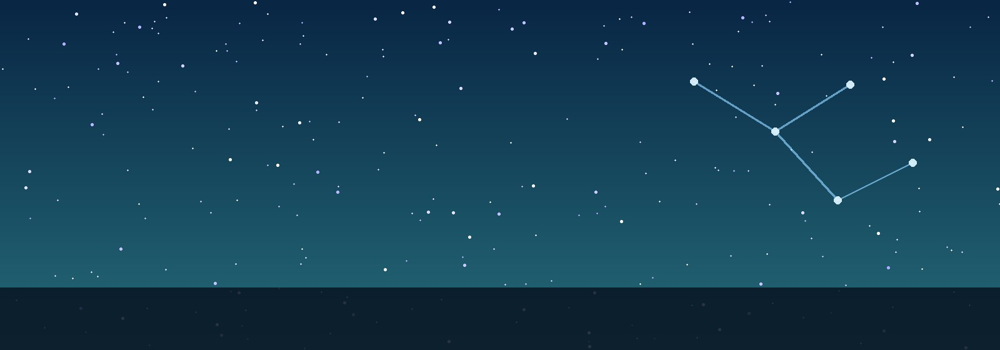
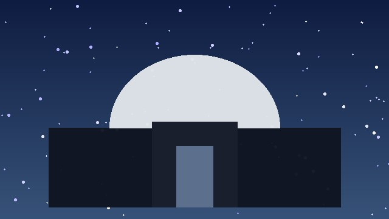
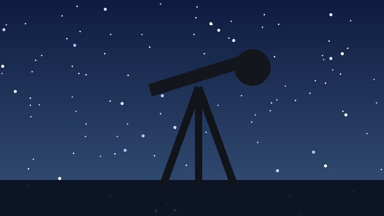

GANGWON OBSERVATORY
도심을 벗어나 선명한 밤하늘을 직접 만나보세요.

OBSERVATION EXPERIENCE
전문 해설과 함께 달과 행성, 별자리를 관측합니다.

SPACE MAKING CLASS
가족과 함께 우주를 배우는 특별한 하루를 완성하세요.


강원천문대에서는 여름 밤하늘의 대표 별자리와 행성을 관측하는 특별 프로그램을 운영합니다.
운영기간 2026년 8월 15일 ~ 8월 31일
운영시간 20:00 ~ 22:00
프로그램 별자리 해설, 천체망원경 관측, 별자리 만들기 체험
기상 상황에 따라 관측 일정이 변경될 수 있으니 방문 전 공지사항을 확인해 주세요.